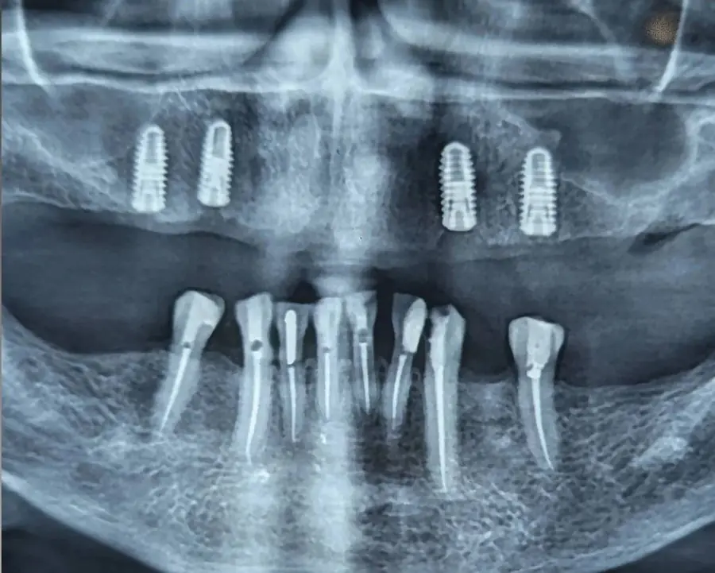

نسخه استخراجشده؛ ترجمه یا تأیید علمی انجام نشده است. وضعیت: captured
بیمار برای اوردنچر فک بالا آمده است. ایمپلنتهای ماگزیلا قبلاً در مرکز دیگری گذاشته شدهاند و طرح درمان اولیه را هم کس دیگری داده است. در نگاه اول تعداد ایمپلنتها برای اوردنچر قابل قبول است. آیا میشود وارد فاز پروتز شد؟

دو ملاحظه باعث شد ورود به فاز پروتز پذیرفته نشود.
ایمپلنتها در مرکزی گذاشته شده بودند که از نظر نحوهی انجام درمان و مجری آن اطمینان کافی وجود نداشت. ورود به فاز پروتز بدون قطعیت نسبت به پایهی درمان میتواند ریسک پیشبینیناپذیری ایجاد کند.
در فک پایین اکلوژن خلفی مؤثری وجود نداشت و تماسها عمدتاً در ناحیهی قدامی متمرکز میشدند.
تعداد کافی ایمپلنت، بهتنهایی مجوز شروع پروتز نیست.
در رستوریشنهای ثابت اهمیت اکلوژن خلفی شناختهشده است؛ اما در پروتزهای متحرکی مثل اوردنچر، که گیرش به اتچمنتها بند است، این موضوع حتی حساستر است.
قبل از هرگونه درمان در فک بالا، لازم بود ساپورت خلفی در فک پایین ایجاد شود؛ از دو مسیر:
بیمار تنها متقاضی درمان فک بالا بود و تمایلی به اصلاح شرایط فک پایین نداشت. چون اوردنچر بدون ساپورت خلفی نتیجهای قابل پیشبینی ایجاد نمیکرد، ورود به فاز پروتز پذیرفته نشد.
اوردنچر موفق فقط به تعداد ایمپلنتها وابسته نیست؛ گاهی آنچه نتیجه را تعیین میکند نه در فک درمانشونده، بلکه در اکلوژن فکی است که قرار است با آن کار کند.
نوع سؤال: ساخت کلمه · 4 خانه
حروف منبع: ا · ه · پ · ی